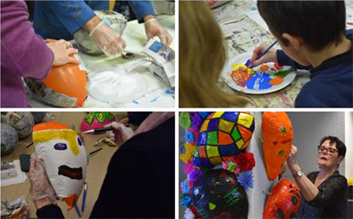

"N'oubliez pas de manger du saint-nectaire !" : toute la filière AOP est en surplus de production
Les Actualités du Puy-de-Dôme
Fromage

Sciences
Les portails des sciences participatives dans le Puy-de-Dôme : douze espaces de liberté sans quitter son domicile.
Météo
Des feux pour protéger les vignes d'Auvergne du gel de printemps
Education nationale
« Pas de suppression de classe dans les écoles rurales à la rentrée », a dit le ministre : la réaction des syndicats enseignants du Puy-de-Dôme
Initiative

A 25 ans, Marie Marques crée son entreprise d'événementiel "Un petit +" pour Thiers et au-delà (Puy-de-Dôme)
Récup'

Comment fabriquer un masque pour le carnaval avec peu de matériel ? Réponse en 6 étapes avec les Etoiles d'Issoire
Biodiversité
Des Auvergnats lancent un appel national pour replanter des arbres mellifères et protéger les abeilles